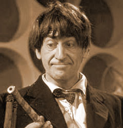

|  | The Second Doctor is the second incarnation of the protagonist of the long-running BBC television science fiction series Doctor Who. He was portrayed by character actor Patrick Troughton. The transformation into the Second Doctor, originally referred to as a "renewal", was a turning point in the evolution of the series. The renewal and transformation process eventually became a critical element of the series' longevity.The second Doctor was the same 'essential' character as the first but he had a very different persona. |